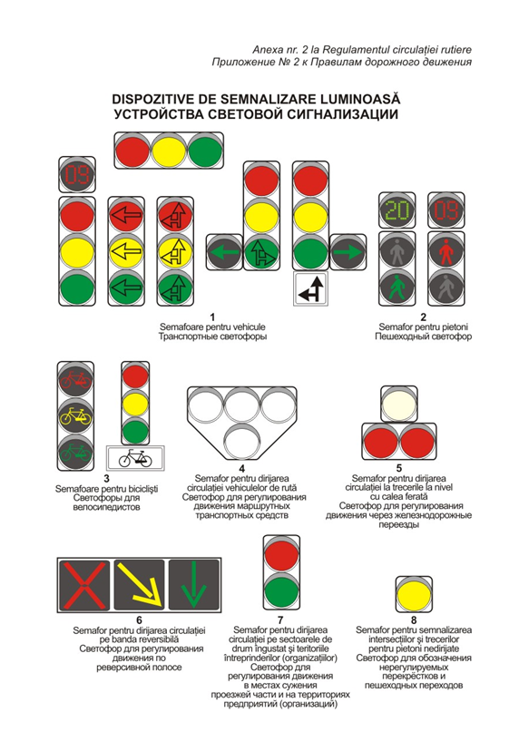

Semafoare pentru vehicule, pietoni, bicicliști, vehicule de rută, treceri la nivel cu calea ferată și benzi reversibile. Mai jos — ilustrațiile din anexa nr. 2 la Regulament și textul punctelor 19–24.
Tipuri de semafoare

- 1Semafoare pentru vehicule
- 2Semafor pentru pietoni
- 3Semafoare pentru bicicliști
- 4Semafor pentru dirijarea circulației vehiculelor de rută
- 5Semafor pentru dirijarea circulației la trecerile la nivel cu calea ferată
- 6Semafor pentru dirijarea circulației pe banda reversibilă
- 7Semafor pentru dirijarea circulației pe sectoarele de drum îngustat și pe teritoriile întreprinderilor (organizațiilor)
- 8Semafor pentru semnalizarea intersecțiilor și trecerilor pentru pietoni nedirijate
Ce spune Regulamentul
19.1) Semnalele luminoase pentru dirijarea circulaţiei vehiculelor sînt de culoare roşie, galbenă şi verde. Aceste semnale sînt emise de lămpile semaforului în următoarea succesiune:
a) roşu, roşu şi galben (concomitent), verde, galben, cu repetarea ciclului respectiv;
b) roşu, verde, galben, cu repetarea ciclului respectiv;
2) Semnificaţia semnalelor luminoase ale semaforului pentru dirijarea circulaţiei vehiculelor este valabilă pe toată lăţimea carosabilului în sensul de mers.
3) Pe drumurile cu două sau mai multe benzi pe sens delimitate prin marcaje longitudinale, semafoarele pot fi suspendate deasupra fiecărei benzi. În această situaţie, conducătorii de vehicule trebuie să se conformeze semnificaţiei semnalului luminos corespunzător benzii pe care circulă.
20.Semnalele luminoase pentru dirijarea circulaţiei au următoarele semnificaţii:
1) Semnalul de culoare roşie interzice trecerea. La semnalul roşu al semaforului (cu excepţia celui reversibil) vehiculele vor fi oprite înaintea liniei de oprire (indicatorului 5.73) sau înaintea trecerii marcate pentru pietoni, iar în lipsa acestora − imediat înaintea semaforului. Dacă semaforul este suspendat deasupra sau plasat pe cealaltă parte a intersecţiei, în lipsa liniei de oprire (indicatorului 5.73) sau a trecerii marcate pentru pietoni, vehiculele vor fi oprite în faţa intersecţiei, fără a crea obstacole pietonilor.
2) Semnalul de culoare roşie pus în funcţiune concomitent cu semnalul galben înseamnă că timpul rezervat semnalului roşu expiră, fără ca prin aceasta să se modifice semnificaţia de interzicere a trecerii. În cazul în care timpul semnalului roşu este cronometrat, participanţii la trafic, pentru a porni la timp ca să nu stînjenească traficul, pot să se conducă de indicaţiile cronometrului.
3) Semnalul de culoare verde permite trecerea. Semnalul verde intermitent de asemenea permite trecerea, informînd că timpul rezervat acestui semnal expiră şi în curînd va fi pus în funcţiune semnalul galben. În cazul în care timpul semnalului verde este cronometrat, pentru a evita frînarea bruscă sau alte situaţii de urgenţă, participanţii la trafic trebuie să urmărească indicaţiile cronometrului şi din timp, înainte de a intra în intersecţie, să decidă privind continuarea deplasării sau efectuarea opririi.
4) Semnalul galben avertizează că vehiculele care se apropie trebuie să fie oprite în locurile prevăzute la subpunctul 1) din prezentul punct, cu excepţia celor care, la apariţia semnalului, se află atît de aproape de locurile respective, încît nu mai pot fi oprite fără a recurge la frînarea bruscă.
5) Semnalul galben intermitent permite trecerea, totodată avertizează că intersecţia sau trecerea pentru pietoni este cu circulaţia nedirijată şi prezintă pericol, impunînd conducătorilor prudenţă sporită.
Înainte de a trece de la circulaţia dirijată la circulaţia nedirijată, pentru toate direcţiile de deplasare prin intersecţie se afişează semnalul roşu.
6) Săgeţile conturate de culoare neagră pe fundalul de culoare roşie şi galbenă informează despre direcţiile de deplasare permise la apariţia semnalului de culoare verde.
Săgeata de culoare neagră conturată (săgeţile conturate) pe fundalul semnalului verde informează conducătorii despre prezenţa semnalului suplimentar sau prezenţa indicatorului de sens obligatoriu corespunzător şi permite (permit) circulaţia numai în direcţia indicată (direcţiile indicate). Aceeaşi semnificaţie are semnalul de culoare verde în formă de săgeată, aplicat pe fundalul negru al semnalului suplimentar al semaforului sau săgeata (săgeţile) de pe panoul adiţional 6.23.1 – 6.23.5. Săgeata care permite circulaţia spre stînga permite şi întoarcerea.
7) La apariţia semnalului verde, conducătorii de vehicule:
a) pot să înceapă deplasarea numai după ce s-au asigurat că prin aceasta nu creează obstacole vehiculelor antrenate deja în trecerea intersecţiei, indiferent de direcţia lor de mers, precum şi pietonilor care finalizează traversarea carosabilului;
b) nu vor intra în intersecţie, în cazul în care circulaţia în direcţia de deplasare este dificilă sau blocată, fapt ce nu le va permite eliberarea intersecţiei pînă la schimbarea semnalului.
8) Pe sectoarele de drum cu intersecţii în sistem de „undă verde”, pentru a întîlni succesiv semnalul verde, conducătorii de vehicule pot urma recomandării indicatorului 5.52.
21.În intersecţii dirijarea circulaţiei vehiculelor de rută, care se deplasează pe benzi special rezervate lor, poate fi efectuată separat de dirijarea circulaţiei celorlalte vehicule, prin semafoare speciale avînd patru semnale luminoase de culoare albă aranjate în forma literei „T”.
Circulaţia este permisă numai în cazul în care funcţionează semnalul inferior concomitent cu unul sau mai multe din cele superioare, din care cel din stînga permite circulaţia la stînga, cel din mijloc − înainte, cel din dreapta − la dreapta. În cazul în care funcţionează numai cele superioare, circulaţia este interzisă.
22.1) În cazul în care deasupra benzii delimitate prin marcajul rutier 1.9 este suspendat un semafor cu semnale: roşu în formă de două bare încrucişate; galben în formă de săgeată înclinată spre dreapta; verde în formă de săgeată îndreptată în jos, acesta este destinat semnalizării privind inversarea temporară a sensului de circulaţie pe această bandă. Semnalul roşu interzice circulaţia, cel galben informează despre comutarea semnalului verde cu cel roşu şi obligă preselectarea benzii indicate de săgeată, cel verde permite circulaţia.
2) Pentru dirijarea circulaţiei pe sectoarele de drum îngustat (în cazul efectuării lucrărilor pe drum) şi pe teritoriile întreprinderilor (organizaţiilor) se utilizează semaforul cu două semnale: de culoare roşie şi verde.
23.1) Semnalele luminoase ale semafoarelor pentru dirijarea circulaţiei pietonilor sînt de culoare verde şi roşie, iar funcţionarea lor este corelată cu semnalele luminoase ale semafoarelor pentru dirijarea circulaţiei vehiculelor.
Semnalul verde are silueta unui pieton în mers, iar cel roşu − silueta unui pieton oprit. Aceste semafoare trebuie să fie instalate astfel încît să excludă confundarea lor cu cele care dirijează circulaţia vehiculelor.
2) Semnalul verde permite trecerea.
În cazul în care semnalul verde începe să funcţioneze intermitent, aceasta înseamnă că timpul rezervat traversării drumului expiră.
3) Semnalul roşu interzice trecerea.
Pietonii surprinşi în timpul traversării drumului de semnalul roşu vor finisa trecerea, iar dacă pe carosabil există refugiu, vor aştepta pe acest spaţiu semnalul verde.
4) Pentru dirijarea circulaţiei bicicliştilor se utilizează semaforul pe fundalul semnalelor căruia este aplicat simbolul bicicletei sau semaforul care este însoţit de panoul 6.6.7.
Semnalizarea trecerilor la nivel cu calea ferată
24.1) Semnalele luminoase la trecerile la nivel cu calea ferată sînt compuse din două lumini roşii amplasate la aceeaşi înălţime şi o lumină albă amplasată deasupra celor roşii.
Semnalele luminoase de culoare roşie care funcţionează intermitent alternativ interzic trecerea. Aceste semnale sînt însoţite de un semnal sonor.
Semnalul intermitent cu lumină albă permite trecerea.
2) În cazul în care barierele se află în poziţia coborîtă sau în curs de coborîre, traversarea trecerii la nivel cu calea ferată este interzisă.
Barierele trebuie marcate cu o asociere de benzi fluorescent-reflectorizante de culoare roşie şi albă.
La trecerile pe drumurile fără iluminare artificială, barierele trebuie să fie iluminate ori pe ele să fie instalate seturi fluorescent-reflectorizante sau lanterne cu lumini roşii intermitente.
Înaintea trecerilor la nivel cu calea ferată electrificată pot fi instalate porţi ce limitează gabaritele.
3) Apropierea de o cale ferată se semnalizează prin indicatoarele de avertizare 1.1 sau 1.2, iar în imediata apropiere de trecerea fără bariere se instalează indicatoarele rutiere 1.3.1 sau 1.3.2.
În afara localităţilor, înaintea trecerilor la nivel cu calea ferată, în mod succesiv, pe partea dreaptă a drumului se instalează indicatoarele rutiere 1.4.1 – 1.4.3, iar pe partea stîngă − indicatoarele 1.4.4 – 1.4.6. Indicatoarele 1.4.1, 1.4.3, 1.4.4 şi 1.4.6 însoţesc indicatorul 1.1 sau 1.2.
În cazul în care, la apropierea de trecerea la nivel cu calea ferată fără bariere, cîmpul vizual este limitat, înaintea acesteia se instalează indicatorul de prioritate 2.2. La trecerile în cauză circulaţia vehiculelor poate fi dirijată de agentul de cale ferată.
Indicatoarele rutiere (anexa nr.3)
Punctele 19–24 în textul integral al capitolului III →
E mai ușor să înveți Regulamentul cu profesorul care a participat la elaborarea lui.
Înscriere: 069 592 995